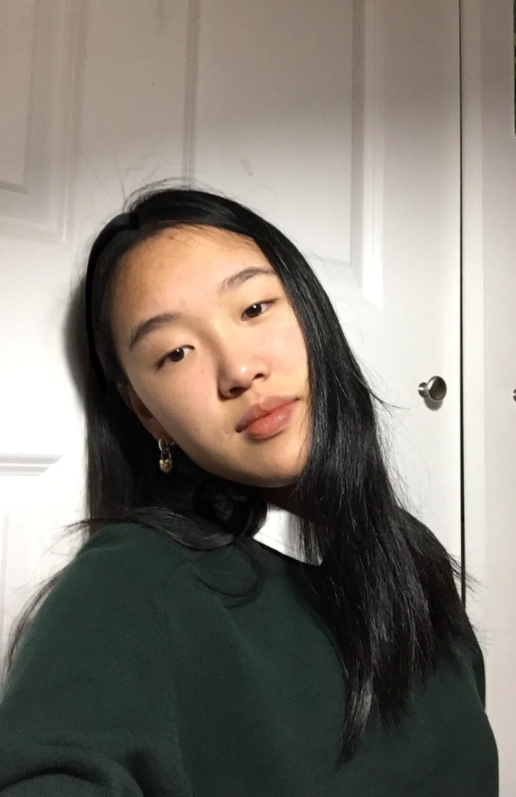

I'm currently attending Cornell University, and I'm planning on graduating in May 2027 with a double major in CS + Electrical Engineering. I am member of the electrical subteam of the Liquid Propulsion Rocket Club, which focuses on building and launching a liquid powered rockets to competing the FAROUT Tournament. Outside of school, I enjoy photography, playing the piano, going on hikes, and learning new things.
Previously:
- Conducted research with Professor Suma Bhat from UIUC and published paper titled, “Predicting Recidivism With ML: An Analysis of Risk Factors and Proposal of Preventions" in the Journal of Student Research
- Implemented a mobile app which identifies types of plants and provides the user tips for care-takings using Google Teachable Machine, XCode, Figma, and a Tensorflow Image Classification Sample.
- Created a platform that helps students take effective notes by harnessing Python's speech recognition library and NLTK library to recognize and summarize text. Achieved 2nd place out of 50+ teams in the hackathon.
